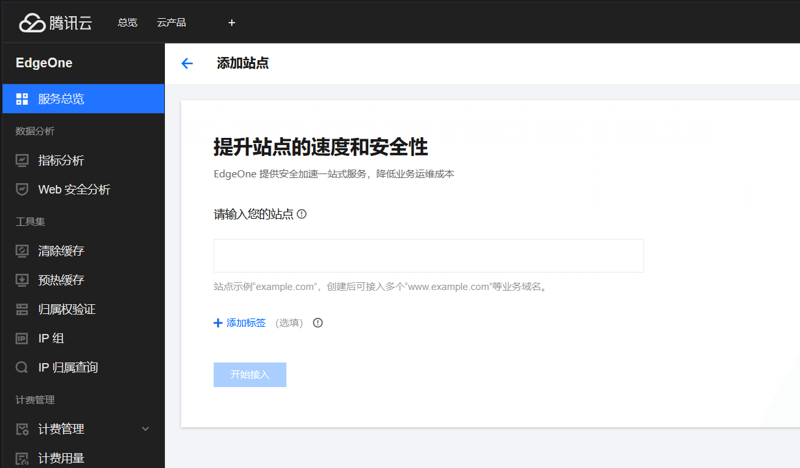

EdgeOne CDN加速
什么是EdgeOne？ EdgeOne 是腾讯云推出的下一代边缘安全加速平台，虽然它具备传统 CDN（内容分发网络） 的功能，但实际上是对 CDN 的全面升级产品。它不仅仅是一个 CDN，还融合了多种功能，提供更强大的加速和安全防护能力。
EdgeOne 的核心特点包括： - CDN 功能升级：支持静态和动态内容加速，优化跨地域访问，显著降低访问延迟。 - 安全防护：内置 DDoS/CC 防护、Web 防护、Bot 管控等功能，提供全面的网络安全保障。 - 边缘计算支持：支持边缘函数和即时处理（如视频、图片处理），适用于 Serverless 场景。 - 一站式服务：集成 DNS 解析、四层代理等功能，简化配置和运维。 与传统 CDN 相比，EdgeOne 更像是“加速 + 防护 + 运维一体化”的解决方案，适用于游戏、电商、视频、金融等需要高性能和高安全性的场景。因此，虽然 EdgeOne 包含 CDN 的功能，但它的定位和能力远超传统 CDN。 >提供免费的CDN加速的服务商很多，选择EO的原因有三个：①EO是国内腾讯云推出的，保证了一定访问速度；②域名可以不用备案；③提供免费的SSL证书。 >Could Flare（简称”CF”），虽然我的”大善人“支持免费的CDN加速，域名不需要备案以及提供SSL证书，但是CF在国内访问速度很慢，也因此它的CDN服务在国内称为“减速器”。想要获得一个较好的访问速度需要做优选。
登录EO网站
进入EO官网注册账号领取免费套餐。 ## 添加站点 建议添加根域名，这样就能添加多个子域名的业务域名。

添加站点后会让你选择套餐，选择一个免费套餐即可。
选择接入EO网络的方式和加速区域
加速区域选择“全球可用区（不含中国大陆）”，域名不用备案； 因为我的域名是托管在Could Flare上的，没有在腾讯上，所有选择CNAME接入
 >接下来会让你在你的域名托管商上面添加一条TXT记录，已进行归属权验证。
>接下来会让你在你的域名托管商上面添加一条TXT记录，已进行归属权验证。
添加加速域名
理论上EO可以反代任何网站
加速域名不能是根域，只能是其子域 加速域名：访问地址 源站配置：最终访问的网站域名 回源HOST头：一般是使用源站域名加速
 加速域名不能是根域，只能是其子域 加速域名：访问地址
源站配置：最终访问的网站域名 回源HOST头：一般是使用源站域名加速
加速域名不能是根域，只能是其子域 加速域名：访问地址
源站配置：最终访问的网站域名 回源HOST头：一般是使用源站域名加速
DNS解析
上述配置完成后，EO会提供一个它加速域名，并且让你在域名托管商在DNS中添加一条CNAME记录。如果对访问速度要求高可以自己做优选。
EO优选好像屏蔽了哪些付费节点，现在做优选会测速全绿，但访问不了网站。